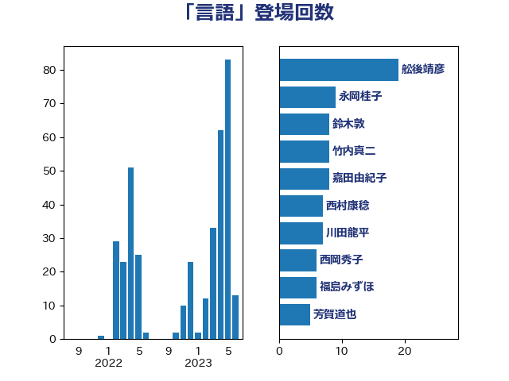

単語「言語」

| 舩後靖彦 | れいわ新選組 | 19 回 |
| 永岡桂子 | 自由民主党 | 9 回 |
| 鈴木敦 | 国民民主党 | 8 回 |
| 竹内真二 | 公明党 | 8 回 |
| 嘉田由紀子 | 無所属 | 8 回 |
| 西村康稔 | 自由民主党 | 7 回 |
| 川田龍平 | 立憲民主党 | 7 回 |
| 西岡秀子 | 国民民主党 | 6 回 |
| 福島みずほ | 社会民主党 | 6 回 |
| 芳賀道也 | 国民民主党 | 5 回 |
| 斎藤アレックス | 国民民主党 | 5 回 |
| 堀場幸子 | 日本維新の会 | 5 回 |
| 輿水恵一 | 公明党 | 4 回 |
| 羽田次郎 | 立憲民主党 | 4 回 |
| 簗和生 | 自由民主党 | 4 回 |
| 石垣のりこ | 立憲民主党 | 4 回 |
| 木村英子 | れいわ新選組 | 4 回 |
| 國重徹 | 公明党 | 4 回 |
| 高橋光男 | 公明党 | 3 回 |
| 自見はなこ | 自由民主党 | 3 回 |
| 神津たけし | 立憲民主党 | 3 回 |
| 平沼正二郎 | 自由民主党 | 3 回 |
| 平将明 | 自由民主党 | 3 回 |
| 山田太郎 | 自由民主党 | 3 回 |
| 山崎正恭 | 公明党 | 3 回 |
| 古賀千景 | 立憲民主党 | 3 回 |
| 加藤勝信 | 自由民主党 | 3 回 |
| 伊東信久 | 日本維新の会 | 3 回 |
| 今井絵理子 | 自由民主党 | 3 回 |
| 中条きよし | 日本維新の会 | 3 回 |
| 上野通子 | 自由民主党 | 3 回 |
| 齋藤健 | 自由民主党 | 2 回 |
| 遠藤良太 | 日本維新の会 | 2 回 |
| 藤岡隆雄 | 立憲民主党 | 2 回 |
| 荒井優 | 立憲民主党 | 2 回 |
| 米山隆一 | 立憲民主党 | 2 回 |
| 神谷宗幣 | 参政党 | 2 回 |
| 石橋林太郎 | 自由民主党 | 2 回 |
| 石川大我 | 立憲民主党 | 2 回 |
| 渡辺博道 | 自由民主党 | 2 回 |
| 梅村みずほ | 日本維新の会 | 2 回 |
| 柚木道義 | 立憲民主党 | 2 回 |
| 日下正喜 | 公明党 | 2 回 |
| 平林晃 | 公明党 | 2 回 |
| 川合孝典 | 国民民主党 | 2 回 |
| 小野田紀美 | 自由民主党 | 2 回 |
| 宮路拓馬 | 自由民主党 | 2 回 |
| 安江伸夫 | 公明党 | 2 回 |
| 塩田博昭 | 公明党 | 2 回 |
| 伊藤孝恵 | 国民民主党 | 2 回 |
| 串田誠一 | 日本維新の会 | 2 回 |
| 中谷一馬 | 立憲民主党 | 2 回 |
| あべ俊子 | 自由民主党 | 2 回 |
| 鰐淵洋子 | 公明党 | 1 回 |
| 高木かおり | 日本維新の会 | 1 回 |
| 鈴木貴子 | 自由民主党 | 1 回 |
| 鈴木庸介 | 立憲民主党 | 1 回 |
| 金城泰邦 | 公明党 | 1 回 |
| 赤羽一嘉 | 公明党 | 1 回 |
| 赤池誠章 | 自由民主党 | 1 回 |
| 谷合正明 | 公明党 | 1 回 |
| 西村智奈美 | 立憲民主党 | 1 回 |
| 菊田真紀子 | 立憲民主党 | 1 回 |
| 穀田恵二 | 日本共産党 | 1 回 |
| 福島伸享 | 無所属 | 1 回 |
| 田中昌史 | 自由民主党 | 1 回 |
| 牧義夫 | 立憲民主党 | 1 回 |
| 漆間譲司 | 日本維新の会 | 1 回 |
| 浅田均 | 日本維新の会 | 1 回 |
| 水岡俊一 | 立憲民主党 | 1 回 |
| 森山浩行 | 立憲民主党 | 1 回 |
| 柴田巧 | 日本維新の会 | 1 回 |
| 林芳正 | 自由民主党 | 1 回 |
| 松本剛明 | 自由民主党 | 1 回 |
| 松原仁 | 立憲民主党 | 1 回 |
| 杉本和巳 | 日本維新の会 | 1 回 |
| 本田太郎 | 自由民主党 | 1 回 |
| 末松信介 | 自由民主党 | 1 回 |
| 有村治子 | 自由民主党 | 1 回 |
| 徳永エリ | 立憲民主党 | 1 回 |
| 後藤茂之 | 自由民主党 | 1 回 |
| 平木大作 | 公明党 | 1 回 |
| 岬麻紀 | 日本維新の会 | 1 回 |
| 山本剛正 | 日本維新の会 | 1 回 |
| 山下貴司 | 自由民主党 | 1 回 |
| 小野泰輔 | 日本維新の会 | 1 回 |
| 小熊慎司 | 立憲民主党 | 1 回 |
| 小沢雅仁 | 立憲民主党 | 1 回 |
| 太栄志 | 立憲民主党 | 1 回 |
| 天畠大輔 | れいわ新選組 | 1 回 |
| 大島九州男 | れいわ新選組 | 1 回 |
| 大塚耕平 | 国民民主党 | 1 回 |
| 大塚拓 | 自由民主党 | 1 回 |
| 堀井巌 | 自由民主党 | 1 回 |
| 坂本祐之輔 | 立憲民主党 | 1 回 |
| 吉良州司 | 無所属 | 1 回 |
| 吉田はるみ | 立憲民主党 | 1 回 |
| 吉田とも代 | 日本維新の会 | 1 回 |
| 北神圭朗 | 無所属 | 1 回 |
| 井出庸生 | 自由民主党 | 1 回 |
| 中川貴元 | 自由民主党 | 1 回 |
| 中川正春 | 立憲民主党 | 1 回 |
| 三浦信祐 | 公明党 | 1 回 |